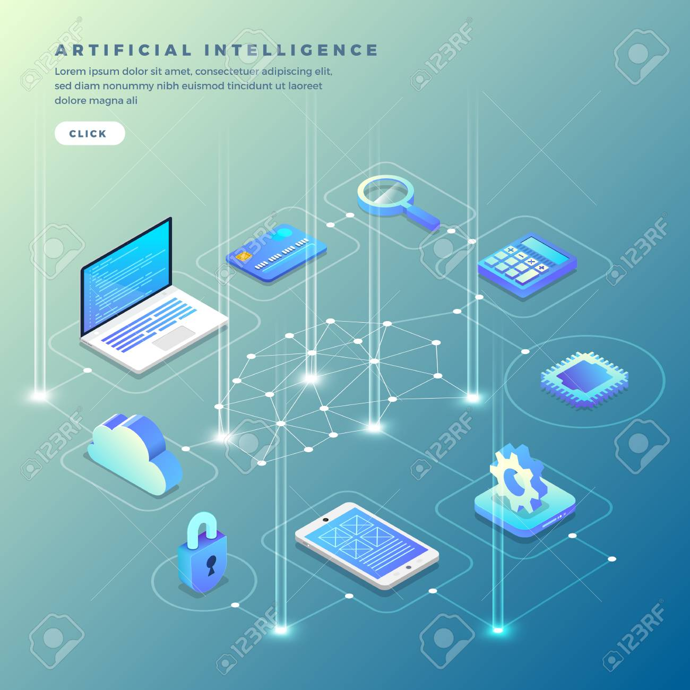

Main page
links:
-Artificial intelligence (AI), the ability of a digital computer or computer-controlled robot to perform tasks commonly associated with intelligent beings. The term is frequently applied to the project of developing systems endowed with the intellectual processes characteristic of humans, such as the ability to reason, discover meaning, generalize, or learn from past experience. Since the development of the digital computer in the 1940s, it has been demonstrated that computers can be programmed to carry out very complex tasks—as, for example, discovering proofs for mathematical theorems or playing chess—with great proficiency. Still, despite continuing advances in computer processing speed and memory capacity, there are as yet no programs that can match human flexibility over wider domains or in tasks requiring much everyday knowledge. On the other hand, some programs have attained the performance levels of human experts and professionals in performing certain specific tasks, so that artificial intelligence in this limited sense is found in applications as diverse as medical diagnosis, computer search engines, and voice or handwriting recognition.
